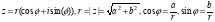

Завдання 5.1 Розв’язати ціле раціональне рівняння , виконавши операції визначення найменшого спільного знаменника дробів, приведення рівняння до спільного знаменника, пошуку кореня в перетвореному рівнянні.
Хід роботи
Раціональне рівняння - це рівняння виду f(x) = g(x), де f(x) і g(x) раціональні вирази. Раціональні вирази це цілі і дробові вирази, з'єднані між собою знаками арифметичних дій: ділення, множення, додавання або віднімання, зведення в цілу степінь і знаками послідовності цих виразів.
Якщо хоча б в одній частині раціонального рівняння міститься дріб, то рівняння називається дрібно-раціональним.
Алгоритм розв’язання цілих раціональних рівнянь
Визначити найменший спільний знаменник для всього рівняння.
Визначити множники, на які потрібно помножити кожен член рівняння.
Привести до спільного знаменника всі рівняння.
Здійснення пошуку коренів отриманого цілого раціонального рівняння.
.
let mutable b1 = 2.
let mutable b2 = 3.
let mutable b3 = 6.
let mutable x = 0.
while(x < 10.) do
if((((x-1.)/(2.)) + ((2.*x)/(3.)) - ((5.*x)/(6.))) = 0.) then
printfn "yeeeee"
printfn "%A" x
x <- x + 0.5
Завдання 5.2 . Створити список цілих додатних і від’ємних чисел, з кожної пари яких побудувати комплексні числа у тригонометричній формі і записати їх до нового списку. Тригонометрична форма комплексного числа задається модулем z і аргументом ; 
Хід роботи
Код програми
(DEFUN SUBTR_COMPLEX (N1 N2)
(LIST (- (CAR N1) (CAR N2)) (- (CADR N1) (CADR N2))))
(DEFUN MULT_COMPLEX (N1 N2)
(DECLARE (SPECIAL A))
(DECLARE (SPECIAL B))
(DECLARE (SPECIAL C))
(DECLARE (SPECIAL D))
(SETQ A (CAR N1))
(SETQ B (CADR N1))
(SETQ C (CAR N2))
(SETQ D (CADR N2))
(LIST (- (* A C) (* B D)) (+ (* A D)(* B C))))
(DEFUN DIV_COMPLEX (N1 N2)
;ОБЪЯВЛЕНИЕ ВСПОМОГАТЕЛЬНЫХ ПЕРЕМЕННЫХ
(DECLARE (SPECIAL A))
(DECLARE (SPECIAL B))
(DECLARE (SPECIAL C))
(DECLARE (SPECIAL D))
(SETQ A (CAR N1))
(SETQ B (CADR N1))
(SETQ C (CAR N2))
(SETQ D (CADR N2))
(LIST (FLOAT (/ (+ (* A C) (* B D)) (+ (* C C) (* D D)))) (FLOAT (/ (- (* B C) (* A D)) (+ (* C C) (* D D))))))
(DEFUN SUM (N1 N2)
(LIST (+ (CAR N1) (CAR N2)) (+ (CADR N1) (CADR N2))))
(print (SUM '(1 2) '(2 3) ) )
(print (SUBTR_COMPLEX '(1 2) '(2 3) ) )
(print (MULT_COMPLEX '(1 2) '(2 3) ) )
(print (DIV_COMPLEX '(1 2) '(2 3) ) )
Висновки:
Отже, в результаті виконання лабораторної роботи було оброблено раціональні та комплексні числа мовою функціонального програмування, а також на цій лабораторній роботі було створено алгоритми та реалізацію програм, протестовано виконання програм за допомогою тестових варіантів.